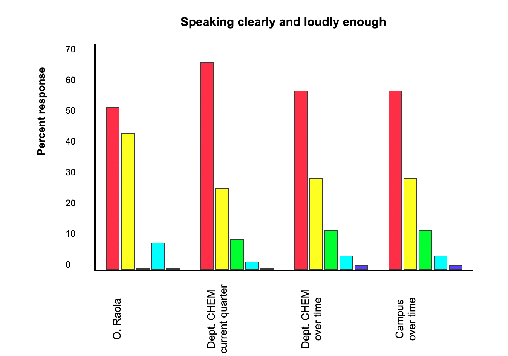

In normal speech I have a tendency to speak quite fast. That was a reason for taking special care in slowing down and improving my diction. This evaluation shows good progress in this department and the need to keep on working in its improvement.